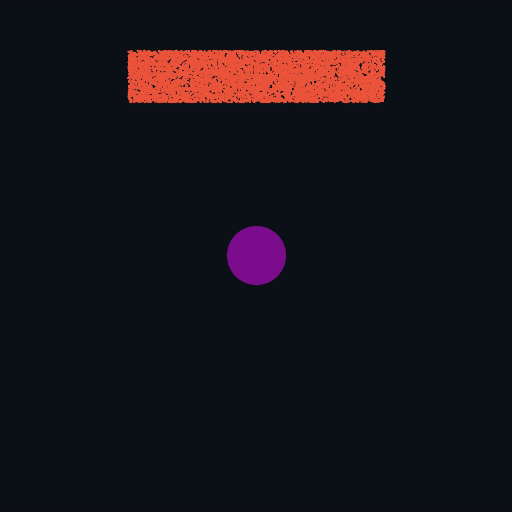
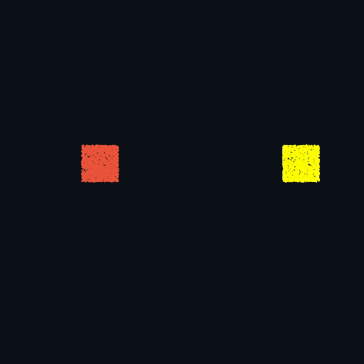
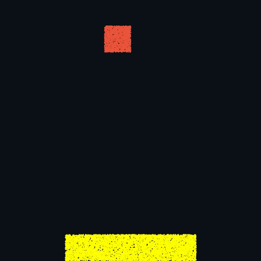
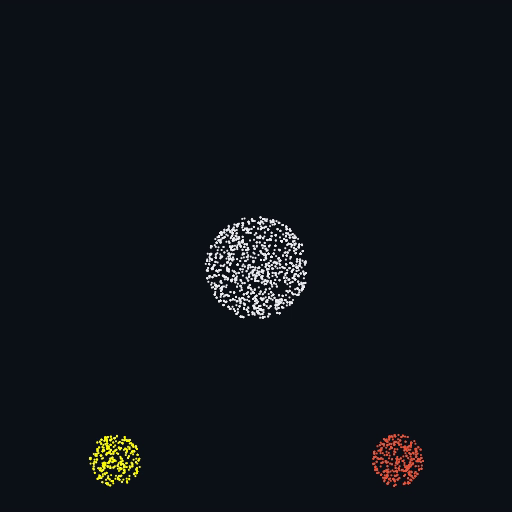

Milestone Report: Material Point Method
CS184 - Spring 2021
Teresa Yang, Stephen Lin, Nikki Suppala, and Brandon Illescas
Milestone video
Presentation Slides
Preliminary Results
Milestone video
Presentation SlidesUsing the Taichi programming language, which is discussed further in the “Current Progress” section below, we have been able to render both rigid and elastic materials; we have also rendered specific materials such as snow, water, and sand. The majority of our work was in 2D, although we have begun taking a look at how 3D renders will work with Taichi.
The following renders were made using the Minimum Least Squares Material Point Method, which improves the way in which traditional MPM does the discretisation that projects the continuous quantities to discrete particles and nodes. We played around with existing demos to gain an understanding of how the materials are simulated and adjusted parameters accordingly to get different effects. We used an existing engine to produce these results:
|
|

|

|
|

|

|

|
Current Progress
So far, we have been focusing on exploring the Taichi programming language as a means of adding support for more materials in the MLS-MPM engine. Taichi is a Python-based programming language optimized for computer graphics, using Python as a framework. The engine currently includes an MLS-MPM solver, which we hope to modify to be more robust and generic. Our original plan was to improve traditional MPM by implementing MLS discretization, but we pivoted to this new goal after finding good existing solvers. Now we plan to add support for realistic hair, lava, and other viscoelastic materials. In addition to the preliminary renders displayed above, we have learned about the physics concepts involved. For example, from reading code and literature, we discovered the effect of various constants in terms of the physical properties.
Young’s modulus ($E$) measures tensile elasticity and determines how susceptible a body is to deformation along a given axis when opposing forces are applied along the axis. The Poisson ratio ($\nu$) measures the deformation of an object perpendicular to an applied force. Softer materials generally have higher values of $\nu$. Lamé’s second parameter ($\mu$) describes a similar measure of tendency to shear (along axis coplanar to the applied force) stress. Finally, the first Lamé parameter ($\lambda$) is used to compute the Cauchy stress tensor ($\sigma$), which gives the stress state for a uniformly stressed body In $\texttt{mpm_solver.py}$, these parameters are varied across different materials to simulate various hard and soft bodies; since the constants affect the stresses and deformation, they are also used compute momentum changes and therefore affect the overall simulation.
$$\lambda = \frac{E \nu}{(1 + \nu)(1 - 2 \nu)}$$ $$\mu = \frac{E}{2(1 + \nu)}$$ $$\sigma = 2 \mu \epsilon + \lambda \text{tr}(\epsilon)I$$Here, $\text{tr}$ is the trace function, and $\epsilon$ is the strain tensor.
Getting an understanding of the physics and math behind MLS-MPM has been helping us make the material bodies look rigid in a more realistic way. We are hoping to now use this knowledge to move onto hair and viscoelastic fluid simulations.
Updated Workplan
| Week | Tasks |
|---|---|
|
4/26/21 |
Incorporate more materials into current MLS-MPM solver |
|
5/3/21 |
Debugging; prepare for presentation |